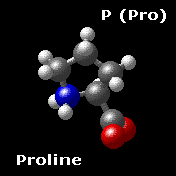
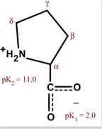
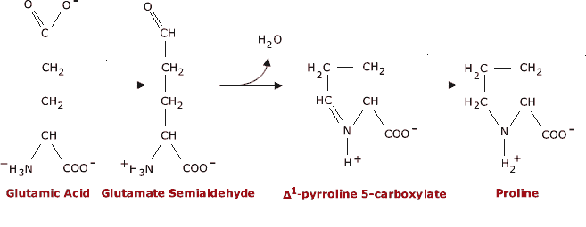

The Biology Project > Biochemistry > The Chemistry of Amino Acids
Proline P (Pro)
Chemical Properties: Physical Properties:
Nonpolar
Proline shares many properties with the aliphatic group.
Proline is formally NOT an amino acid, but an imino acid. Nonetheless, it is called an amino acid. The primary amine on the α carbon of glutamate semialdehyde forms a Schiff base with the aldehyde which is then reduced, yielding proline.
When proline is in a peptide bond, it does not have a hydrogen on the α amino group, so it cannot donate a hydrogen bond to stabilize an α helix or a β sheet. It is often said, inaccurately, that proline cannot exist in an α helix. When proline is found in an α helix, the helix will have a slight bend due to the lack of the hydrogen bond.
Proline is often found at the end of α helix or in turns or loops. Unlike other amino acids which exist almost exclusively in the trans- form in polypeptides, proline can exist in the cis-configuration in peptides. The cis and trans forms are nearly isoenergetic. The cis/trans isomerization can play an important role in the folding of proteins and will be discussed more in that context.
Proline is the only cyclic amino acid.

Biosynthesis of Proline Glutamic acid is easily converted into proline. First, the γcarboxyl group is reduced to the aldehyde, yielding glutamate semialdehyde. The aldehyde then reacts with the α-amino group, eliminating water as it forms the Schiff base. In a second reduction step, the Schiff base is reduced, yielding proline. 
Top
The Biology Project > Biochemistry > The Chemistry of Amino Acids
http://biology.arizona.edu
All contents copyright © 2003. All rights reserved.